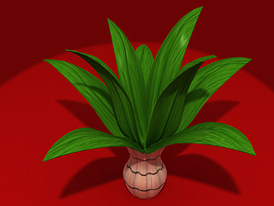
Сначала сделаем один лист.1. Создайте 3 сплайна с одинаковым количеством точек.
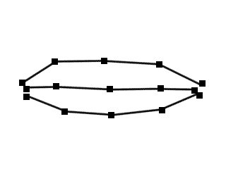2. Присоедините их командой Attach. Для этого выделите один сплайн, разверните свиток Geometry, щёлкните по кнопке Attach и общёлкайте остальные сплайны. Получится составная фигура.
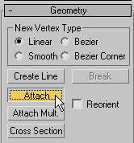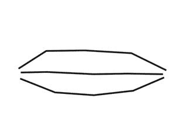3. Выделите все точки и поменяйте тип точек на Smooth.
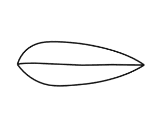4. Совместите крайние точки сплайнов командой Fuse.
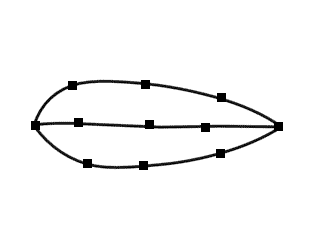5. Включите 3D привязки EndPoint и постройте поперечные сплайны с помощью команды Create Line.
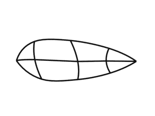6. Придайте более изящную форму каркасу, выделяя и перемещая точки в окнах проекций.
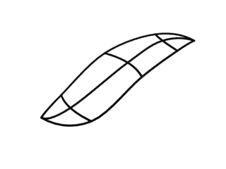7. Выделите точки на внутреннем сплайне и поменяйте их тип на Bezier Corner, настройте направляющие вектора как на рисунке.
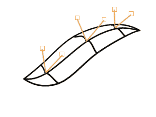8. Примените модификатор Surface (для построения поверхности), а потом модификатор Shell (для придания толщины листу).
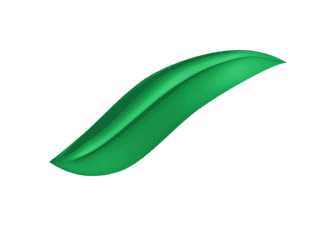Получился лист.
Теперь необходимо его "размножить". Для этого удобно воспользоваться командой Array (Массив).1. Чтобы лист «закрутился» вокруг вазы, нужно центром выборочной системы координат Pick выбрать вазу (для этого в выпадающем списке выберите систему координат Pick, после чего щелкните по вазе). Затем установие центр преобразования Use Transform Coordinate Center (как показано на рисунке ниже).
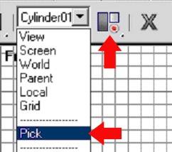2. Выделите лист и выполните команду главного меню Tools - Array. Установите в окне массива следующие настройки:
Type of object: Instance (тип объектов)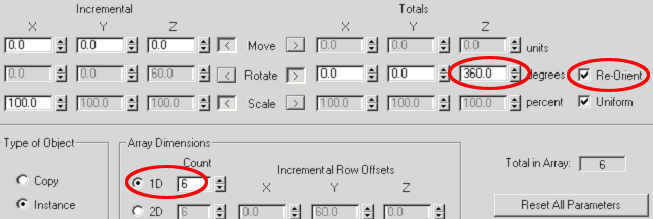
3. Приподнимите один лист и ещё раз «закрутите» вокруг вазы.После применения материалов получится довольно симпатичное комнатное растение.